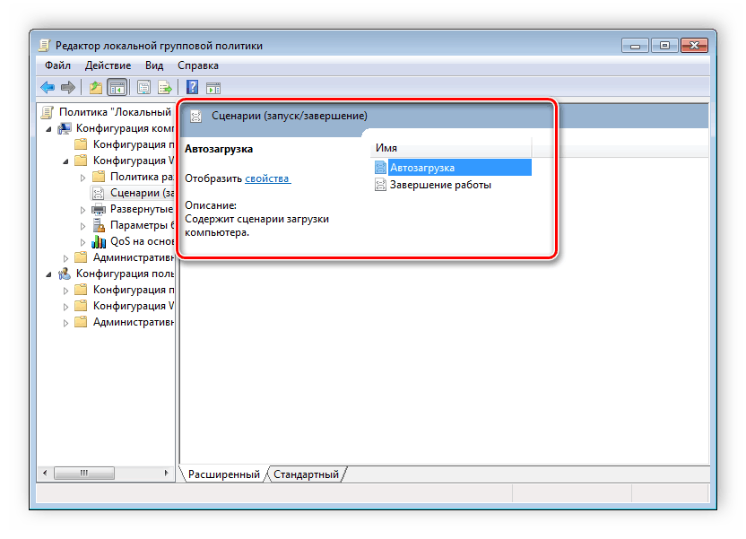
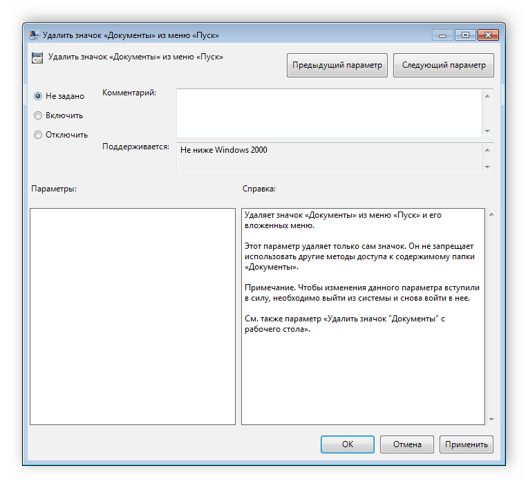
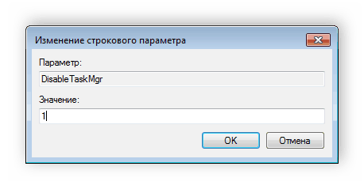
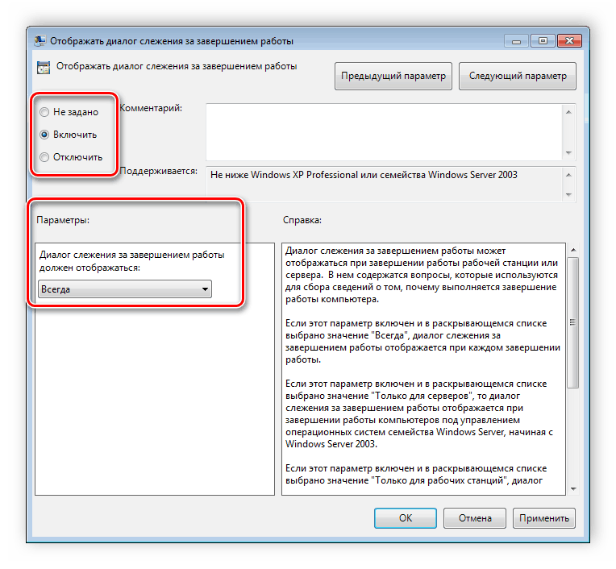

Решение проблем конфигурации с помощью групповых политик.
Групповые политики нужны для управления операционной системы Windows. Они применяются во время персонализации интерфейса, ограничения доступа к определенным ресурсам системы и многого другого. Используют данные функции преимущественно системные администраторы. Они создают однотипную рабочую среду на нескольких компьютерах, ограничивают доступ пользователям. В этой статье мы подробно разберем групповые политики в Windows 7, расскажем про редактор, его настройку и приведем некоторые примеры групповых политик.
Редактор групповой политики
В Windows 7 Домашняя Базовая/Расширенная и Начальная редактор групповых политик просто отсутствует. Разработчики позволяют использовать его только в профессиональных версиях Виндовс, например, в Windows 7 Максимальная. Если вы не обладаете этой версией, то те же действия вам придется выполнять через изменения параметров реестра. Давайте подробнее рассмотрим редактор.
Запуск редактора групповой политики
Переход к среде работы с параметрами и настройками осуществляется за несколько простых действий. Вам только необходимо:
- Зажать клавиши Win + R, чтобы открыть «Выполнить».

- Напечатать в строке gpedit.msc и подтвердить действие, нажав «ОК». Далее запустится новое окно.
Теперь можно приступать к работе в редакторе.
Работа в редакторе
Разделяется главное окно управления на две части. Слева располагается структурированные категории политик. Они в свою очередь делятся еще на две различные группы – настройка компьютера и настройка пользователя.

В правой части отображается информация о выбранной политике из меню слева.

Из этого можно сделать вывод, что работа в редакторе осуществляется путем перемещения по категориям для поиска необходимой настройки. Выберите, например, «Административные шаблоны» в «Конфигурации пользователя» и перейдите в папку «Меню «Пуск» и диспетчер задач». Теперь справа отобразятся параметры и их состояния. Нажмите на любую строку, чтобы открыть ее описание.

Настройки политики
Каждая политика доступна для настройки. Открывается окно редактирования параметров по двойному щелчку на определенную строку. Вид окон может отличаться, все зависит от выбранной политики.

Стандартное простое окно имеет три различных состояния, которые настраиваются пользователем. Если точка стоит напротив «Не задано», то политика не действует. «Включить» – она будет работать и активируются настройки. «Отключить» – находится в рабочем состоянии, однако параметры не применяются.
Рекомендуем обратить внимание на строку «Поддерживается» в окне, она показывает, на какие версии Windows распространяется политика.
Фильтры политик
Минусом редактора является отсутствие функции поиска. Существует множество различных настроек и параметров, их больше трех тысяч, все они разбросаны по отдельным папкам, а поиск приходится осуществлять вручную. Однако данный процесс упрощается благодаря структурированной группе из двух ветвей, в которых расположились тематические папки.

Например, в разделе «Административные шаблоны», в любой конфигурации, находятся политики, которые никак не связаны с безопасностью. В этой папке находится еще несколько папок с определенными настройками, однако можно включить полное отображение всех параметров, для этого нужно нажать на ветвь и выбрать пункт в правой части редактора «Все параметры», что приведет к открытию всех политик данной ветви.

Экспорт списка политик
Если все-таки появляется необходимость найти определенный параметр, то сделать это можно только путем экспорта списка в текстовый формат, а потом уже через, например Word, осуществлять поиск. В главном окне редактора есть специальная функция «Экспорт списка», он переносит все политики в формат TXT и сохраняет в выбранном месте на компьютере.

Применение фильтрации
Благодаря появлению ветви «Все параметры» и улучшению функции фильтрации поиск практически не нужен, ведь лишнее откидывается путем применения фильтров, а отображаться будут только необходимые политики. Давайте подробнее рассмотрим процесс применения фильтрации:
- Выберите, например, «Конфигурация компьютера», откройте раздел «Административные шаблоны» и перейдите в «Все параметры».

- Разверните всплывающее меню «Действие» и перейдите в «Параметры фильтра».

- Поставьте галочку возле пункта «Включить фильтры по ключевым словам». Здесь имеется несколько вариантов подбора соответствий. Откройте всплывающее меню напротив строки ввода текста и выберите «Любой» – если нужно отображать все политики, которые соответствуют хотя бы одному указанному слову, «Все» – отобразит политики, содержащие текст из строки в любом порядке, «Точный» – только параметры, точно соответствующие заданному фильтру по словам, в правильном порядке. Флажками снизу строки соответствий отмечаются места, где будет осуществляться выборка.

- Нажмите «ОК» и после этого в строке «Состояние» отобразятся только подходящие параметры.

В том же всплывающем меню «Действие» ставится или убирается галочка напротив строки «Фильтр», если нужно применить или отменить заранее заданные настройки подбора соответствий.
Принцип работы с групповыми политиками
Рассматриваемый в этой статье инструмент позволяет применять множество самых разнообразных параметров. К сожалению, большинство из них понятно только профессионалам, использующим групповые политики в рабочих целях. Однако и обычному пользователю есть что настроить, используя некоторые параметры. Разберем несколько простых примеров.
Изменение окна безопасности Windows
Если в Виндовс 7 зажать сочетание клавиш Ctrl + Alt + Delete, то будет запущено окно безопасности, где осуществляется переход к диспетчеру задач, блокировка ПК, завершение сеанса системы, смена профиля пользователя и пароля.

Каждая команда за исключением «Сменить пользователя» доступна для редактирования путем изменения нескольких параметров. Выполняется это в среде с параметрами или путем изменения реестра. Рассмотрим оба варианта.
- Откройте редактор.
- Перейдите в папку «Конфигурация пользователя», «Административные шаблоны», «Система» и «Варианты действий после нажатия Ctrl + Alt + Delete».

- Откройте любую необходимую политику в окне справа.

- В простом окне управления состоянием параметра поставьте галочку напротив «Включить» и не забудьте применить изменения.

Пользователям, у которых нет редактора политик, все действия нужно будет выполнять через реестр. Давайте рассмотрим все действия пошагово:
- Перейдите к редактированию реестра.
- Перейдите к разделу «System». Он находится по этому ключу:
HKCU\Software\Microsoft\Windows\CurrentVersion\Policies\System
- Там вы увидите три строки, отвечающие за появление функций в окне безопасности.

- Откройте необходимую строку и поменяйте значение на «1», чтобы активировать параметр.

После сохранения изменений деактивированные параметры больше не будут отображаться в окне безопасности Windows 7.
Изменения панели мест
Многие используют диалоговые окна «Сохранить как» или «Открыть как». Слева отображается навигационная панель, включая раздел «Избранное». Данный раздел настраивается стандартными средствами Windows, однако это долго и неудобно. Поэтому лучше воспользоваться групповыми политиками для редактирования отображения значков в данном меню. Редактирование происходит следующим образом:
- Перейдите в редактор, выберите «Конфигурация пользователя», перейдите к «Административные шаблоны», «Компоненты Windows», «Проводник» и конечной папкой будет «Общее диалоговое окно открытия файлов».

- Здесь вас интересует «Элементы, отображаемые в панели мест».

- Поставьте точку напротив «Включить» и добавьте до пяти различных путей сохранения в соответствующие строки. Справа от них отображается инструкция правильного указания путей к локальным или сетевым папкам.
Теперь рассмотрим добавление элементов через реестр для пользователей, у которых отсутствует редактор.
- Перейдите по пути:
HKCU\Software\Microsoft\Windows\CurrentVersion\Policies\
- Выберите папку «Policies» и сделайте в ней раздел comdlg32.
- Перейдите в созданный раздел и сделайте внутри него папку Placesbar.

- В этом разделе потребуется создать до пяти строковых параметров и назвать их от «Place0» до «Place4».

- После создания откройте каждый из них и в строку введите необходимый путь к папке.

Слежение за завершением работы компьютера
Когда вы завершаете работу за компьютером, выключение системы происходит без показа дополнительных окон, что позволяет не быстрее выключить ПК. Но иногда требуется узнать почему происходит выключение или перезапуск системы. В этом поможет включение специального диалогового окна. Включается оно с помощью редактора или путем изменения реестра.

- Откройте редактор и перейдите к «Конфигурация компьютера», «Административные шаблоны», после чего выберите папку «Система».

- В ней нужно выбрать параметр «Отображать диалог слежения за завершением работы».

- Откроется простое окно настройки, где необходимо поставить точку напротив «Включить», при этом в разделе параметры во всплывающем меню необходимо указать «Всегда». После не забудьте применить изменения.

Данная функция включается и через реестр. Вам нужно совершить несколько простых действий:
- Запустите реестр и перейдите по пути:
HKLM\Software\Policies\Microsoft\Windows NT\Reliability

- Найдите в разделе две строки: «ShutdownReasonOn» и «ShutdownReasonUI».
- Введите в строку с состоянием «1».